令和3年度（R3）計算問題
測量士補試験の計算問題 12 問。紙と鉛筆で解いてから「答えと解説」を開いてください。関数の値は試験の巻末の関数表を使います。
No.3数学
次の文の［ア］及び［イ］に入る数値の組合せとして最も適当なものはどれか。次の中から選べ。
なお，関数の値が必要な場合は，巻末の関数表を使用すること。
点A，B，C，Dで囲まれた四角形の平たんな土地ABCDについて，幾つかの辺長と角度を観測したところ，∠ABC＝90°，∠DAB＝105°，AB＝BC＝20 m，AD＝10 mであった。
このときAC＝［ア］mであり，土地ABCDの面積は［イ］m²である。
- ア=28.284／イ=270.711
- ア=28.284／イ=322.475
- ア=34.641／イ=150.000
- ア=34.641／イ=286.603
- ア=34.641／イ=350.000
答えと解説
答え 2
四角形を対角線 AC で 2 つの三角形に分けます。
ア 三角形 ABC は B が直角で AB ＝ BC ＝ 20 m の直角二等辺三角形。三平方の定理で
AC ＝ √800 ＝ 20 × √2 ＝ 20 × 1.41421 ≒ 28.284 m
イ 直角二等辺三角形なので ∠BAC ＝ 45°。残りの ∠CAD は
三角形 ACD は、2 辺（AC と AD）とその間の角が分かるので、面積 ＝ 1/2 × 辺 × 辺 × sin（間の角）。
三角形 ACD ＝ 1/2 × 28.284 × 10 × sin 60° ＝ 141.42 × 0.86603 ≒ 122.47 m²
土地 ABCD ＝ 200 ＋ 122.47 ＝ 322.47 m²
この問題の違和感を報告
No.6多角
図6に示すように多角測量を実施し，表6のとおり，きょう角の観測値を得た。新点⑴における既知点Bの方向角は幾らか。最も近いものを次の中から選べ。
ただし，既知点Aにおける既知点Cの方向角TAは，225°12′40″とする。
なお，関数の値が必要な場合は，巻末の関数表を使用すること。
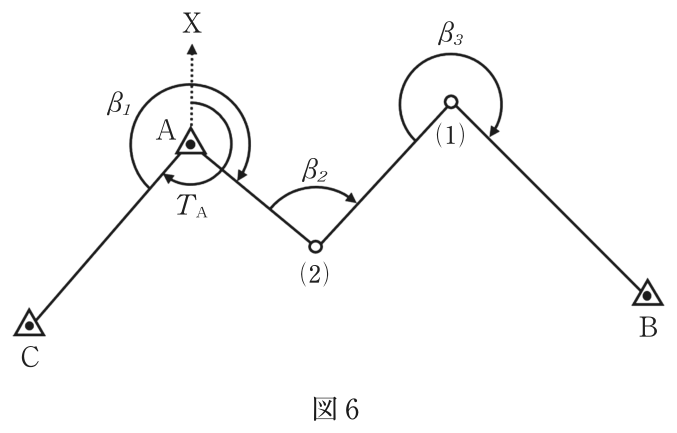
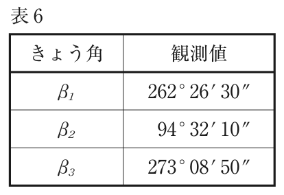
- 42°11′20″
- 44°39′50″
- 86°51′10″
- 135°20′10″
- 137°48′40″
答えと解説
答え 4
方向角は、北（X の向き）から右回りに測った角です。きょう角 β は、1 つ前の点の向きから右回りに、次の点の向きまで測った角。A から順に方向角を出していきます。
A では、C の向き（TA）から右回りに β1 で (2) の向きです。
360° を超えたので 360° を引く → 127°39′10″
(2) では、A の向きから測っています。A の向きは A→(2) の反対向きなので、180° を足してから β2 を足します。(1) でも同じです。
(1)→B 42°11′20″ ＋ 180° ＋ 273°08′50″ ＝ 495°20′10″ → 135°20′10″
この問題の違和感を報告
No.8GNSS
GNSS測量機を用いた基準点測量を行い，基線解析により基準点Aから基準点B，基準点Aから基準点Cまでの基線ベクトルを得た。表8は，地心直交座標系（平成14年国土交通省告示第185号）におけるX軸，Y軸，Z軸方向について，それぞれの基線ベクトル成分（ΔX，ΔY，ΔZ）を示したものである。基準点Cから基準点Bまでの斜距離は幾らか。最も近いものを次の中から選べ。
なお，関数の値が必要な場合は，巻末の関数表を使用すること。
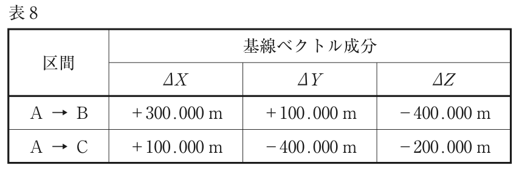
- 538.516 m
- 574.456 m
- 781.025 m
- 806.226 m
- 877.496 m
答えと解説
答え 2
基線ベクトルは「ある点から別の点まで、X・Y・Z 方向にどれだけ動くか」を表した数です。C→A は A→C の符号を全部逆にしたものなので、C→B ＝ (A→B) − (A→C) です。
ΔY ＝ 100 − (−400) ＝ 500 m
ΔZ ＝ −400 − (−200) ＝ −200 m
斜距離（2 点を結ぶまっすぐな長さ）は、3 つの成分の 2 乗を足して √ を付けます（三平方の定理を 2 回）。
斜距離 ＝ √330,000 ＝ 100 × √33 ＝ 100 × 5.74456 ＝ 574.456 m
この問題の違和感を報告
No.9GNSS
公共測量の2級基準点測量において，電子基準点A，Bを既知点とし，新点CにGNSS測量機を設置して観測を行った後，セミ・ダイナミック補正を適用して元期における新点CのY座標値を求めたい。基線解析で得た基線ベクトルに測定誤差は含まれないものとし，基線ACから点CのY座標値を求めることとする。
元期における電子基準点AのY座標値，観測された電子基準点Aから新点Cまでの基線ベクトルのY成分，観測時点で使用するべき地殻変動補正パラメータから求めた各点の補正量がそれぞれ表9－1，9－2，9－3のとおり与えられるとき，元期における新点CのY座標値は幾らか。最も近いものを次の中から選べ。
ただし，座標値は平面直角座標系（平成14年国土交通省告示第9号）における値で，点A，CのX座標値及び楕円体高は同一とする。
また，地殻変動補正パラメータから求めたX方向および楕円体高の補正量は考慮しないものとする。
なお，関数の値が必要な場合は，巻末の関数表を使用すること。
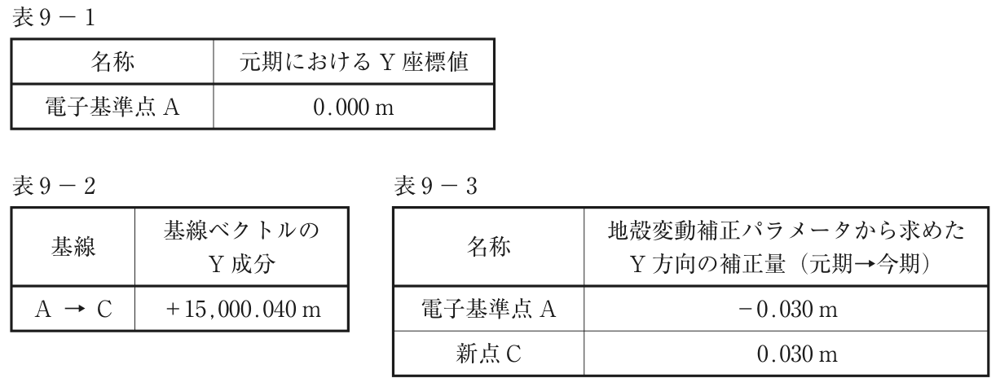
- 14,999.980 m
- 15,000.010 m
- 15,000.040 m
- 15,000.070 m
- 15,000.100 m
答えと解説
答え 1
地面は年々少しずつ動いています。座標の基準にしている時点を元期、観測した時点を今期といいます。観測した基線は今期のものなので、A の座標もいったん今期に直してから足し、最後に元期へ戻します（セミ・ダイナミック補正）。
② C の今期の Y ＝ −0.030 ＋ 15,000.040 ＝ 15,000.010 m
③ C の元期の Y ＝ 15,000.010 − 0.030 ＝ 14,999.980 m
補正量は「元期→今期」の量なので、元期へ戻す ③ では引きます。使うのは A の補正量ではなく、C の補正量（0.030）です。
この問題の違和感を報告
No.12水準
公共測量により，水準点A，Bの間で1級水準測量を実施し，表12に示す結果を得た。温度変化による標尺の伸縮の影響を考慮し，使用する標尺に対して標尺補正を行った後の，水準点A，B間の観測高低差は幾らか。最も近いものを次の中から選べ。
ただし，観測に使用した標尺の標尺改正数は，20 ℃において1 m当たり−8.0×10⁻⁶ m，膨張係数は＋1.0×10⁻⁶／℃とする。
なお，関数の値が必要な場合は，巻末の関数表を使用すること。
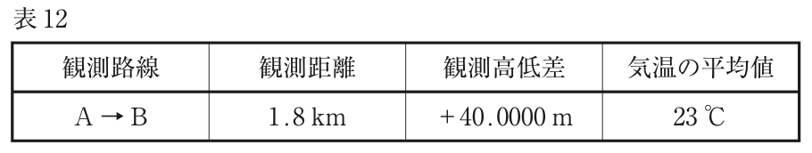
- ＋39.9991 m
- ＋39.9996 m
- ＋39.9998 m
- ＋40.0000 m
- ＋40.0004 m
答えと解説
答え 3
標尺の目盛りには狂いがあり（20 ℃で 1 m あたり −8.0 × 10⁻⁶ m ＝ −8.0 μm）、温度が上がると伸びます（1 ℃につき 1 m あたり ＋1.0 μm）。この 2 つを合わせて、1 m あたりの補正量を出します。
1 m あたり −8.0 ＋ 1.0 × 3 ＝ −5.0 μm
高低差は ＋40.0000 m なので、40 m 分を掛けて、観測した高低差に足します。
40.0000 − 0.0002 ＝ ＋39.9998 m
この問題の違和感を報告
No.13水準
図13に示すように，既知点A，B及びCから新点Pの標高を求めるために公共測量における2級水準測量を実施し，表13－1の結果を得た。新点Pの標高の最確値は幾らか。最も近いものを次の中から選べ。
ただし，既知点の標高は表13－2のとおりとする。
なお，関数の値が必要な場合は，巻末の関数表を使用すること。
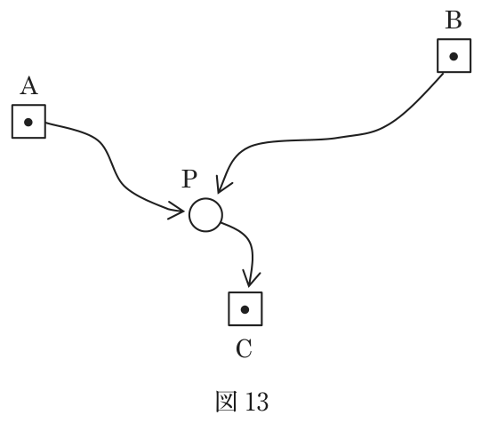
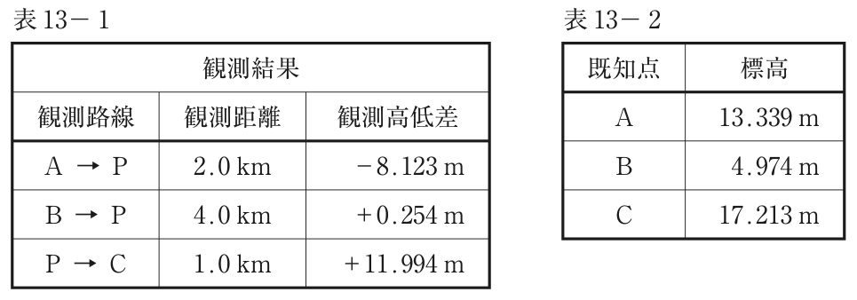
- 5.217 m
- 5.219 m
- 5.221 m
- 5.223 m
- 5.225 m
答えと解説
答え 2
3 つの既知点から、それぞれ P の標高を出します。高低差は「矢印の先が、矢印の元より何 m 高いか」です。P→C は P から C へ上がる量なので、C から P を出すときは引きます。
B から 4.974 ＋ 0.254 ＝ 5.228 m
C から 17.213 − 11.994 ＝ 5.219 m
水準測量は距離が短いほど正確なので、重さ（どれくらい信用するか）を距離に反比例させて平均します。
5.216 m より上の分だけ（mm で）平均すると、0、12、3 なので
最確値 ＝ 5.216 ＋ 0.0034 ≒ 5.219 m
この問題の違和感を報告
No.16写真
空中写真測量において，水平位置の精度を確認するため，数値図化による測定値と現地で直接測量した検証値との比較により点検することとした。5地点の測定値と検証値から，南北方向の較差Δx，東西方向の較差Δyを求めたところ，表16のとおりとなった。
5地点における各々の水平位置の較差Δsから，水平位置の精度を点検するための値σを算出し，最も近いものを次の中から選べ。
ただし，Δsは式16－1で求め，σは計測地点の数をNとし式16－2で求めることとする。
なお，関数の値が必要な場合は，巻末の関数表を使用すること。
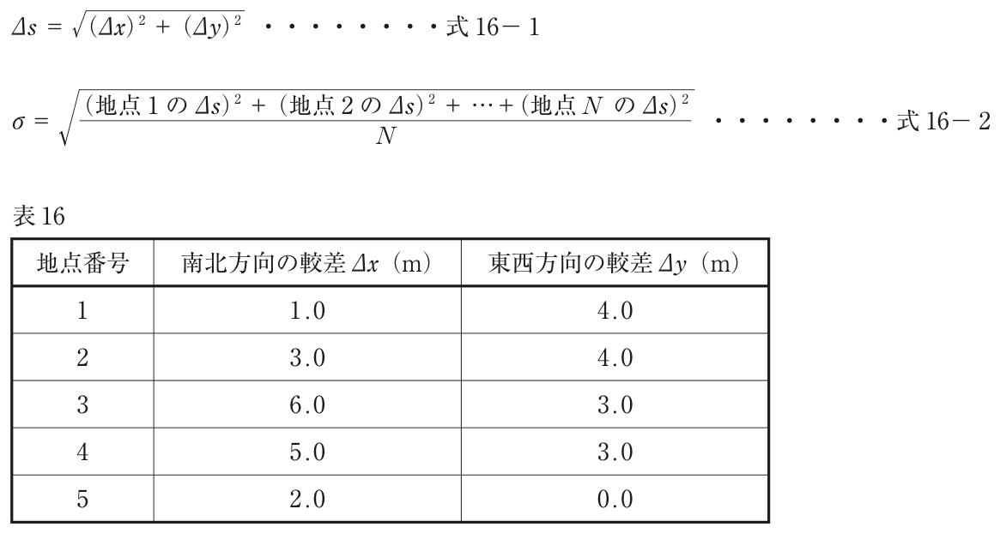
- 2.0 m
- 3.1 m
- 5.0 m
- 7.5 m
- 9.9 m
答えと解説
答え 3
較差は、測定値と検証値のずれです。Δs は南北と東西のずれを合わせた長さで、直角三角形の斜辺にあたります。
σ の式は Δs の 2 乗を足すので、Δs そのもの（√）は出さなくて済みます。Δs² ＝ Δx² ＋ Δy² をそのまま足します。
125 ÷ 5 ＝ 25
σ ＝ √25 ＝ 5.0 m
この問題の違和感を報告
No.18写真
画面距離9 cm，画面の大きさ16,000画素×14,000画素，撮像面での素子寸法5 μmのデジタル航空カメラを鉛直下に向けて空中写真を撮影した。
海面からの撮影高度を3,100 mとした場合，撮影基準面での地上画素寸法は幾らか。最も近いものを次の中から選べ。ただし，撮影基準面の標高は400 mとする。
なお，関数の値が必要な場合は，巻末の関数表を使用すること。
- 10 cm
- 12 cm
- 15 cm
- 17 cm
- 20 cm
答えと解説
答え 3
図の 2 つの三角形（レンズの上と下）は相似なので、「素子の大きさ ： 画面距離 ＝ 地上画素寸法 ： 撮影基準面からカメラまでの高さ」です。画面距離は、レンズから撮像面までの長さです。
2,700 m は 9 cm（0.09 m）の 2,700 ÷ 0.09 ＝ 30,000 倍
地上画素寸法 ＝ 5 μm × 30,000 ＝ 150,000 μm ＝ 15 cm
この問題の違和感を報告
No.19写真
画面距離10 cm，撮像面での素子寸法10 μmのデジタル航空カメラを用いて，対地高度2,000 mから平たんな土地について，鉛直下に向けて空中写真を撮影した。空中写真には，東西方向に並んだ同じ高さの二つの高塔A，Bが写っている。地理院地図上で計測した高塔A，B間の距離が800 m，空中写真上で高塔A，Bの先端どうしの間にある画素数を4,200画素とすると，この高塔の高さは幾らか。最も近いものを次の中から選べ。
ただし，撮影コースは南北方向とする。
また，高塔A，Bは鉛直方向にまっすぐに立ち，それらの先端の太さは考慮に入れないものとする。
なお，関数の値が必要な場合は，巻末の関数表を使用すること。
- 40 m
- 53 m
- 64 m
- 84 m
- 95 m
答えと解説
答え 5
写真に写る大きさは、カメラからの距離で決まります。2 本の塔は同じ高さなので、先端どうしも 800 m はなれて水平に並び、その長さが写真では 4,200 画素に写っています。レンズから先端までの高さを L とすると、図の 2 つの三角形（レンズの上と下）は相似です。
42 mm ： 10 cm ＝ 800 m ： L
L ＝ 800 × 100 ÷ 42 ＝ 80,000 ÷ 42 ≒ 1,905 m
地面からカメラまでは 2,000 m なので、塔の高さ h は
この問題の違和感を報告
No.21地図
図21は，国土地理院がインターネットで公開しているウェブ地図「地理院地図」の一部（縮尺を変更，一部を改変）である。この図にある博物館の経緯度で最も近いものを次のページの中から選べ。
ただし，表21に示す数値は，図の中にある三角点の標高及び経緯度を表す。
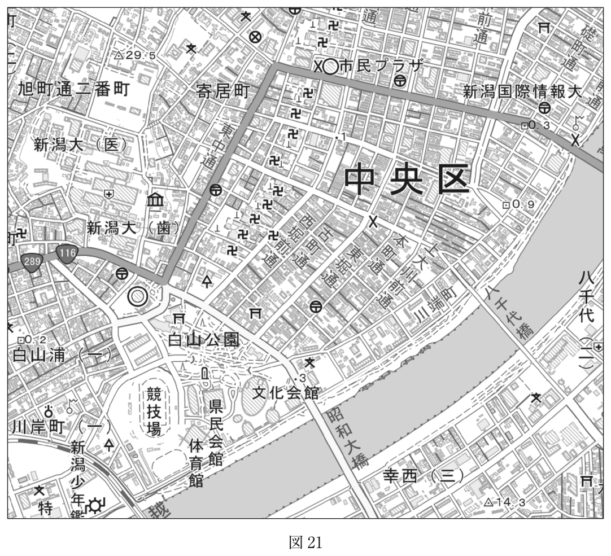
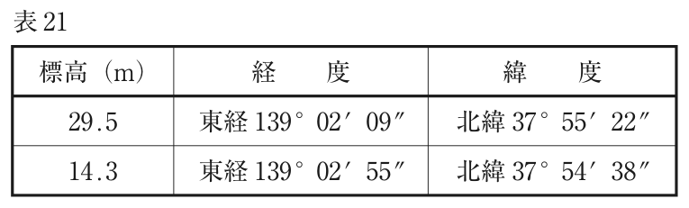
図の出典：国土地理院「地理院地図」（測量士補試験の問題に掲載されたもの）
- 東経139°02′07″ 北緯37°55′08″
- 東経139°02′11″ 北緯37°54′58″
- 東経139°02′13″ 北緯37°55′08″
- 東経139°02′20″ 北緯37°55′00″
- 東経139°02′21″ 北緯37°55′09″
答えと解説
答え 3
図 21 の中から記号を探します。三角点は三角形の中に点がある記号で、そばの数字（29.5 と 14.3）が表 21 の標高です。博物館は柱の並んだ建物の形です。図の右へ行くほど経度が大きく、下へ行くほど緯度が小さくなります。
2 つの三角点の差を表 21 から出し、定規で測った長さの比で博物館の位置を割り出します。
緯度の差 55′22″ − 54′38″ ＝ 44″ （図の上で縦 100.6 mm）
博物館は、三角点 29.5 から東へ 8.3 mm、南へ 32.6 mm です。
緯度 44″ × 32.6 ÷ 100.6 ≒ 14.3″ → 55′22″ − 14.3″ ＝ 55′07.7″
最も近いのは、東経 139°02′13″、北緯 37°55′08″（選択肢 3）です。
図の出典：国土地理院「地理院地図」（測量士補試験の問題に掲載されたもの）。赤・青の線と文字は当サイトが書き足しました
この問題の違和感を報告
No.26応用
次の図26に示すように，始点BC，終点EC，曲率半径R＝1,000 m，交角I＝36°の円曲線（BC〜EC），直線（BP〜BC）及び直線（EC〜EP）を組み合わせた道路を建設したい。
BPからBCまでの距離は215 m，ECからEPまでの距離は500 mとしたとき，BPからEPまでの距離は幾らか。最も近いものを次の中から選べ。
なお，円周率π＝3.14とし，関数の値が必要な場合は，巻末の関数表を使用すること。
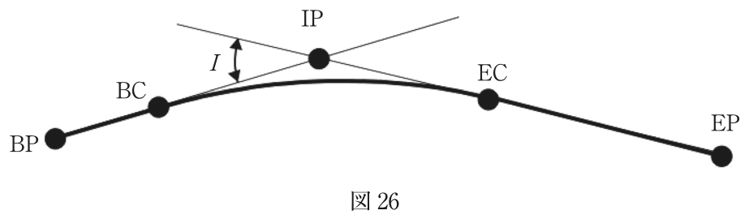
- 1,029 m
- 1,128 m
- 1,238 m
- 1,343 m
- 1,558 m
答えと解説
答え 4
道路を、直線・曲線・直線の 3 つに分けて長さを足します。曲線の部分は半径 1,000 m の円の一部で、その中心角は交角 I（IP で道路の向きが変わる角）に等しく 36° です。
＝ 6,280 × 0.1 ＝ 628 m
この問題の違和感を報告
No.27応用
表27は，公共測量により設置された4級基準点から図27のように三角形の頂点に当たる地点A，B，Cをトータルステーションにより測量した結果を示している。地点A，B，Cで囲まれた三角形の土地の面積は幾らか。最も近いものを次の中から選べ。
なお，関数の値が必要な場合は，巻末の関数表を使用すること。
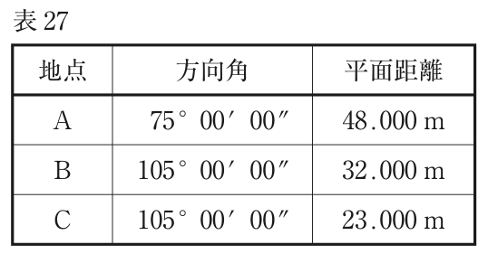
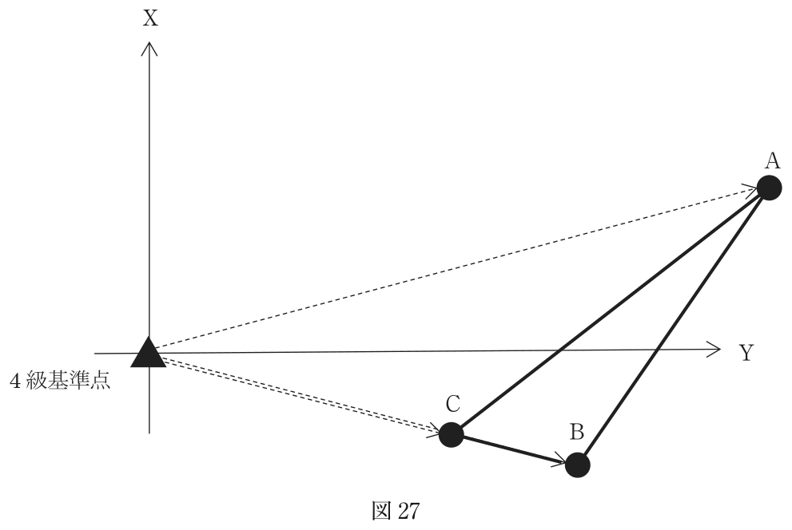
- 55.904 m²
- 108.000 m²
- 138.440 m²
- 187.061 m²
- 200.000 m²
答えと解説
答え 2
4級基準点を O とします。B と C は O から同じ方向角 105° なので、O・C・B は一直線に並びます。三角形 ABC を、その直線の上の辺 CB を底辺、A からその直線までを高さ h として考えます。
O での角 ＝ 105° − 75° ＝ 30°
高さ h ＝ 48.000 × sin 30° ＝ 48 × 0.50000 ＝ 24.000 m